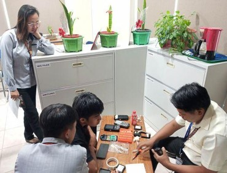
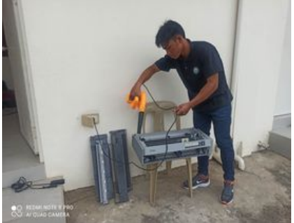
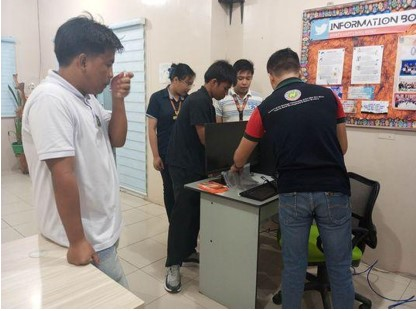
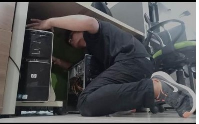
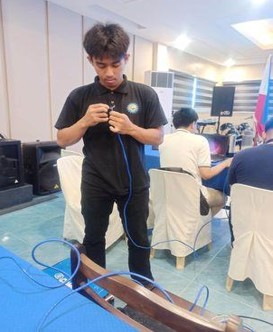
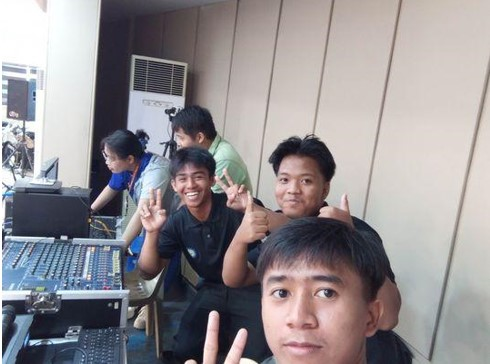

A comprehensive journey through hands-on technical training at Cagayan Electric Company (CAGELCO). This immersion program provided real-world experience in IT support, hardware maintenance, and network infrastructure.






This immersion reinforced my technical skills and emphasized the importance of:
Gained practical experience working with real company equipment and systems in a professional environment
Developed strong troubleshooting and maintenance skills across hardware, software, and network systems
Learned workplace professionalism, time management, and effective communication in a corporate setting
Understood the role of IT in supporting business operations and maintaining critical infrastructure
A week-by-week breakdown of my learning progression and key milestones achieved during the work immersion program
Introduced to company procedures, safety protocols, and basic hardware maintenance tasks like cleaning and organizing equipment
Advanced to device repairs, workstation setup, printer maintenance, and assisting with handheld meter reading devices
Learned network cable creation, shadowed programmers during system updates, and managed digital archiving projects
Operated audio-visual equipment for events independently and completed final assessment projects demonstrating acquired skills
Discover my academic achievements, leadership roles, and ongoing technical projects